☰
Home
About
ALTAC Inc
Costa Rica
Summit
Schedule
Tour
Event
Agreegments
Contact
Bienvenidos a Costa Rica
Costa Rica, una joya escondida en el corazón de América Central...
Maravillas Naturales
Infraestructura y Conectividad
Sostenibilidad y Ecoturismo
Actividades para Todos los Gustos
Cultura y Tradición
Seguridad y Hospitalidad
Costa Rica es un destino de ensueño que ofrece el equilibrio perfecto entre aventura, relajación...